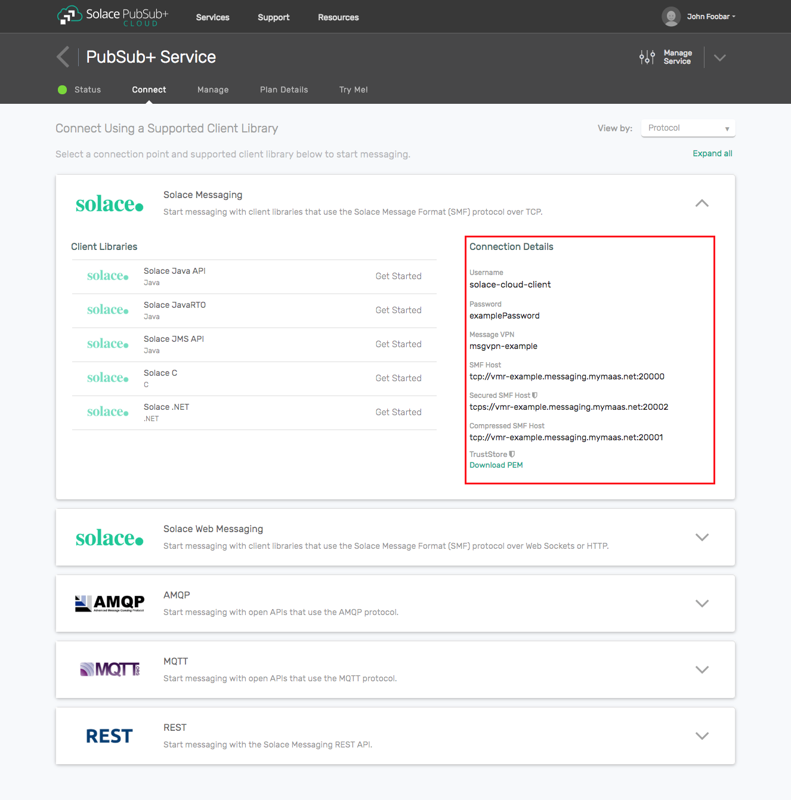

This document demonstrates how to integrate Solace Java Message Service (JMS) with the Spring Java Framework v4 or v5 for production and consumption of JMS messages. The goal of this document is to outline best practices and sample code for this integration to enable efficient use of both the Spring Framework and Solace JMS.
Note that a separate project and guide is available for Spring Boot Auto-Configuration with most of the concepts transferable from this guide. The Spring Boot project also provides Spring configuration examples using annotation and classes while this guide uses the Spring XML configuration file.
The target audience of this document is developers using the Spring Framework with knowledge of both the Spring Java Framework and JMS in general. As such this document focuses on the technical steps required to achieve the integration. For detailed background on either Solace JMS or the Spring Framework refer to the referenced documents below.
This tutorial requires access to Solace PubSub+ event broker and requires that you know several connectivity properties about your event broker. Specifically you need to know the following:
Resource | Value | Description |
Host | String | This is the address clients use when connecting to the event broker to send and receive messages. (Format: |
Message VPN | String | The event broker Message VPN that this client should connect to. |
Client Username | String | The client username. (See Notes below) |
Client Password | String | The client password. (See Notes below) |
There are several ways you can get access to Solace messaging and find these required properties.

The general Spring Framework support for JMS integration is outlined in detail in the Spring Documentation. There are many ways to integrate the Spring Framework and Solace JMS. The configuration outlined in this document makes use of Spring messaging resource caching and JNDI object caching.
In order to illustrate the Spring Framework integration, the following sections will highlight the required Spring Framework configuration changes and provide snippets of sample code for sending and receiving messages. The full Spring XML configuration file (SolResource.xml) and MessageProducer and MessageConsumer Java code can be found in the in the GitHub repo of this guide.
Spring supports several ways of configuring containers. The following sections use the XML-based configuration, but integration with Solace JMS would be equally supported using annotation-based configuration. For more information on Spring container configuration see the Spring documentation - Java-based container configuration.
This integration guide demonstrates how to configure a Spring application to receive and send JMS messages using a shared JMS connection. Accomplishing this requires completion of the following steps.
This integration guide will demonstrate the creation of Solace resources and configuration of Spring Framework resources. This section outlines the resources that are created and used in the subsequent sections.
The following event broker resources are required for the integration sample in this document.
Resource | Value | Description |
Event Broker Host | Refer to step Get Solace Messaging for values | |
Message VPN | ||
Client Username | ||
Client Password | ||
Solace Queue | Q/requests | Solace destination of messages produced and consumed |
JNDI Connection Factory | JNDI/CF/spring | The JNDI Connection factory for controlling Solace JMS connection properties |
JNDI Queue Name | JNDI/Q/requests | The JNDI name of the queue used in the samples |
The following Spring container configuration is referenced in the integration steps. These items are explained in detail in the Integration chapter of the Spring Framework documentation. SolResources.xml, available from the GitHub project, contains the full Spring configuration file for these resources, and how each of these resources relates to integration with Solace is explained in the subsequent sections as these resources are introduced.
Resource | Value |
org.springframework.jndi.JndiTemplate | solaceJndiTemplate |
org.springframework.jndi.JndiObjectFactoryBean | solaceConnectionFactory |
org.springframework.jms.connection.CachingConnectionFactory | solaceCachedConnectionFactory |
org.springframework.jms.connection.SingleConnectionFactory | solaceSingleConnectionFactory |
org.springframework.jndi.JndiObjectFactoryBean | destination |
org.springframework.jms.core.JmsTemplate | jmsTemplate |
org.springframework.jms.listener.DefaultMessageListenerContainer | jmsContainer |
com.solace.integration.spring.MessageConsumer | messageConsumer |
com.solace.integration.spring.MessageProducer | messageProducer |
The event broker needs to be configured with the following configuration objects at a minimum to enable JMS to send and receive messages within the Spring Framework.
The recommended approach for configuring a event broker is using Solace PubSub+ Manager, Solace's browser-based administration console packaged with the Solace PubSub+ event broker. This document uses CLI as the reference to remain concise - look for related settings if using Solace PubSub+ Manager.
For more details related to event broker CLI see Solace-CLI. Wherever possible, default values will be used to minimize the required configuration. The CLI commands listed also assume that the CLI user has a Global Access Level set to Admin. For details on CLI access levels please see User Authentication and Authorization.
If you are using Solace Cloud you can skip this step because a message-VPN is already assigned. For the name, refer to the "Message VPN" in the connection details page.
This section outlines how to create a message-VPN called "Solace_Spring_VPN" on the event broker with authentication disabled and 2GB of message spool quota for Guaranteed Messaging. This message-VPN name is required in the configuration when connecting to the messaging event broker. In practice, appropriate values for authentication, message spool and other message-VPN properties should be chosen depending on the end application's use case.
> home
> enable
# configure
(config)# create message-vpn Solace_Spring_VPN
(config-msg-vpn)# authentication
(config-msg-vpn-auth)# user-class client
(config-msg-vpn-auth-user-class)# basic auth-type none
(config-msg-vpn-auth-user-class)# exit
(config-msg-vpn-auth)# exit
(config-msg-vpn)# no shutdown
(config-msg-vpn)# exit
(config)#
(config)# message-spool message-vpn Solace_Spring_VPN
(config-message-spool)# max-spool-usage 2000
(config-message-spool)# exit
(config)#
This integration guide shows the receipt of messages within the Spring Framework from a single JMS Queue. For illustration purposes, this queue is chosen to be an exclusive queue with a message spool quota of 2GB, matching the quota associated with the message VPN. The queue name chosen is "Q/requests".
(config)# message-spool message-vpn Solace_Spring_VPN
(config-message-spool)# create queue Q/requests
(config-message-spool-queue)# access-type exclusive
(config-message-spool-queue)# max-spool-usage 2000
(config-message-spool-queue)# permission all delete
(config-message-spool-queue)# no shutdown
(config-message-spool-queue)# exit
(config-message-spool)# exit
(config)#
To enable the JMS clients to connect and look up the Queue destination required by Spring, there are two JNDI objects required on the event broker:
direct-transport is disabled for JMS persistent messaging.They are configured as follows:
(config)# jndi message-vpn Solace_Spring_VPN
(config-jndi)# create connection-factory JNDI/CF/spring
(config-jndi-connection-factory)# property-list messaging-properties
(config-jndi-connection-factory-pl)# property default-delivery-mode persistent
(config-jndi-connection-factory-pl)# exit
(config-jndi-connection-factory)# property-list transport-properties
(config-jndi-connection-factory-pl)# property direct-transport false
(config-jndi-connection-factory-pl)# property "reconnect-retry-wait" "3000"
(config-jndi-connection-factory-pl)# property "reconnect-retries" "20"
(config-jndi-connection-factory-pl)# property "connect-retries-per-host" "5"
(config-jndi-connection-factory-pl)# property "connect-retries" "1"
(config-jndi-connection-factory-pl)# exit
(config-jndi-connection-factory)# exit
(config-jndi)#
(config-jndi)# create queue JNDI/Q/requests
(config-jndi-queue)# property physical-name Q/requests
(config-jndi-queue)# exit
(config-jndi)#
(config-jndi)# no shutdown
(config-jndi)# exit
(config)#
The following configuration is required to successfully establish a connection from Spring to the Solace PubSub+ event broker.
The example configuration below uses XML-based container configuration to illustrate the integration. The "IP:PORT" should be updated to reference the actual event broker message-backbone VRF IP.
In Solace JMS, the "java.naming.security.principal" often uses the format @. This allows specification of the event broker client username ("spring_user") and message-vpn ("Solace_Spring_VPN") created in the previous section. Both of these items are mandatory in order to connect to the event broker.
The "java.naming.security.credentials" is optional and provides the event broker client password for use when authenticating with the event broker. In this example a password is not used and so this parameter is left commented in the configuration. For further details see the Authentication Section in Advanced Topics
<bean id="solaceJndiTemplate" class="org.springframework.jndi.JndiTemplate"
lazy-init="default" autowire="default">
<property name="environment">
<map>
<entry key="java.naming.provider.url" value="tcp://___IP:PORT___" />
<entry key="java.naming.factory.initial"
value="com.solacesystems.jndi.SolJNDIInitialContextFactory" />
<entry key="java.naming.security.principal"
value="spring_user@Solace_Spring_VPN" />
<!-- <entry key="java.naming.security.credentials"
value="spring_password" /> -->
</map>
</property>
</bean>
<bean id="solaceConnectionFactory" class="org.springframework.jndi.JndiObjectFactoryBean"
lazy-init="default" autowire="default">
<property name="jndiTemplate" ref="solaceJndiTemplate" />
<property name="jndiName" value="/jms/cf/default" />
</bean>
<bean id="solaceCachedConnectionFactory" class="org.springframework.jms.connection.CachingConnectionFactory">
<property name="targetConnectionFactory" ref="solaceConnectionFactory" />
<property name="sessionCacheSize" value="10" />
</bean>
<bean id="solaceSingleConnectionFactory" class="org.springframework.jms.connection.SingleConnectionFactory">
<property name="targetConnectionFactory" ref="solaceConnectionFactory" />
</bean>
The full configuration xml code for this example is available from the following source:
The following table explains each bean configuration and its purpose when connecting to the event broker.
Bean Id | Description |
solaceJndiTemplate | This template outlines general connection details for reaching the Solace JNDI hosted on the event broker. The Solace JNDI is used to look up parameters for client connections and for destinations. |
solaceConnectionFactory | This references a specific connection factory within the Solace JNDI that will be used when creating new connections. The value for "jndiName" is the connection factory name as configured in the Solace JNDI. In the previous section this was configured as "JNDI/CF/spring" |
solaceCachedConnectionFactory | The cached connection factory allows for re-use of the Solace connection when sending messages or receiving messages synchronously. For efficient integration within the Spring Framework, it is essential that connection caching be enabled and configured correctly. There are more details on this in Section 4 Performance Considerations including discussion of the sessionCacheSize attribute. It is this connection factory that is used by the producer when connecting. |
solaceSingleConnectionFactory | The single connection factory should be used with asynchronous consumers using a listener container. It is generally preferable to let the listener container itself handle appropriate caching within its lifecycle. It is this connection factory that is used by the consumer when connecting. |
The recommended method of receiving messages is through the DefaultMessageListenerContainer following the recommendation found in the section Asynchronous Reception – Message-Driven POJOs section of the Spring documentation.
The configuration outlined below enables receiving of messages via a DefaultMessageListenerContainer listener container with message processing being handled by the message consumer as outlined in the following Message Consumer Java Code section.
<bean id="destination" class="org.springframework.jndi.JndiObjectFactoryBean">
<property name="jndiTemplate" ref="solaceJndiTemplate" />
<property name="jndiName" value="queue" />
</bean>
<bean id="messageConsumer" class="com.solacesystems.integration.spring.MessageConsumer">
</bean>
<bean id="jmsContainer" class="org.springframework.jms.listener.DefaultMessageListenerContainer">
<property name="connectionFactory" ref="solaceSingleConnectionFactory" />
<property name="destination" ref="destination" />
<property name="messageListener" ref="messageConsumer" />
<property name="cacheLevelName" value="CACHE_CONSUMER" />
</bean>
The following table explains the configuration and its purpose when receiving messages from the event broker.
Bean Id | Description |
destination | This configuration defines a JMS destination that the consumer will bind to for receiving messages. For the purposes of demonstrating integration, it is the same destination as used when sending messages. The destination is found in JNDI by looking up the name "JNDI/Q/requests" which was previously configured on the event broker JNDI as a queue destination. |
messageConsumer | This configuration identifies the POJO code responsible for processing an incoming JMS message. |
jmsContainer | The JmsContainer links the MessageConsumer with a JMS destination and JMS cached connection using the |
The following is an example of receiving messages using the MessageListener interface and the DefaultMessageListenerContainer using the consumer configuration. The callback will print the message text for all received messages for the purposes of the example.
public class MessageConsumer implements MessageListener {
public void onMessage(Message message) {
// Application specific handling code would follow.
// For this example print the content and the topic of each message
try {
System.out.println("Received message " + ((TextMessage) message).getText() + " on destination: " +
message.getJMSDestination().toString());
} catch (JMSException ex) {
throw new RuntimeException(ex);
}
}
}
The message consumer can be run using a simple main() as follows. The following assumes that the XML configuration required is present on the classpath in the file SolResources.xml. The ClassPathXmlApplicationContext is used to lookup the XML configuration on the class path and create a standalone Spring XML application context. This application context then automatically instantiates the DefaultMessageListenerContainer, which will establish the JMS connection and listen for messages over the single JMS connection.
public static void main(String[] args) {
ClassPathXmlApplicationContext context = new ClassPathXmlApplicationContext(
new String[] { "SolResources.xml" });
// Sample access to MessageConsumer
// MessageConsumer consumer = (MessageConsumer) context.getBean("messageConsumer");
// context.close(); // Calling close will stop message consumption
}
Note that it is also possible to use the MessageListenerAdapter provided by Spring in order to avoid using an interface when receiving messages. This is outlined in the Spring documentation in further detail. In general it makes sense to select the method for receiving messages that most closely matches with the existing behavior of the application. It does not affect the message reception from the event brokers.
The full source code for this example is available in the following source:
In general the JmsTemplate is a convenient and recommended way to send messages from within the Spring Framework. The JmsTemplate contains several methods for sending messages including methods where the target JMS destination can be specified at send time, or alternatively an option where no destination is provided which uses the default JMS producer destination on send. Details of the JmsTemplate are covered in the Java Message Service section of the Spring documentation.
The configuration below is used by the message producer to send JMS messages to the event broker:
<bean id="destination" class="org.springframework.jndi.JndiObjectFactoryBean">
<property name="jndiTemplate" ref="solaceJndiTemplate" />
<property name="jndiName" value="queue" />
</bean>
<bean id="jmsTemplate" class="org.springframework.jms.core.JmsTemplate">
<property name="connectionFactory" ref="solaceCachedConnectionFactory" />
<property name="defaultDestination" ref="destination" />
<property name="deliveryPersistent" value="true" />
<property name="explicitQosEnabled" value="true" />
</bean>
<bean id="messageProducer" class="com.solacesystems.integration.spring.MessageProducer">
<property name="jmsTemplate" ref="jmsTemplate" />
</bean>
The full configuration xml code for this example is available in the following source:
The following table explains the configuration and its purpose when publishing to the event broker.
Bean Id | Description |
destination | This configuration defines a JMS destination for use in sending. The destination is found in JNDI by looking up the name "JNDI/Q/requests" which was previously configured on the event broker JNDI as a queue destination. |
jmsTemplate | The jmsTemplate is the core component of the Spring framework integration with JMS. It contains the reference to the connection factory, a default destination for sending and parameters for customizing the JMS producer from within the Spring framework. A full list of available parameters is documented in [Spring-API]. |
messageProducer | The message producer is a reference to the producer Java code that will be used to send messages to the event broker. This configuration connects that Java code to the correct JmsTemplate configuration. |
The following code sample illustrates basic message publishing from within the Spring Framework. This code will create a simple JMS Text message with contents from the messagetext parameter and send this to the event broker using the default destination of the JmsTemplate.
public class MessageProducer {
private JmsTemplate jmsTemplate;
public void sendMessages(String messagetext) throws JMSException {
getJmsTemplate().send(new MessageCreator() {
public Message createMessage(Session session) throws JMSException {
Message message = session.createTextMessage(messagetext);
return message;
}
});
}
public JmsTemplate getJmsTemplate() {
return jmsTemplate;
}
public void setJmsTemplate(JmsTemplate jmsTemplate) {
this.jmsTemplate = jmsTemplate;
}
}
Similar to the message consumer, the publishing code could be run using a simple main(). The application context is used to lookup the message producer bean and send 10 messages over a cached JMS connection. Note that for sending only, context.close() would be called to close context after sending the messages. In this example it is not closed immediately because same XML configuration file and context is used to demonstrate receiving the messages, see previous section Message Consumer Java Code
public static void main(String[] args) throws JMSException {
ClassPathXmlApplicationContext context = new ClassPathXmlApplicationContext(
new String[] { "SolResources.xml" });
MessageProducer producer = (MessageProducer) context.getBean("messageProducer");
for (int i = 0; i < 10; i++) {
String messagetext = "Test#" + i;
System.out.println("Sending message " + messagetext);
producer.sendMessages(messagetext);
}
// context.close(); // Not closing context here because same context is being used to receive all the messages
}
The full source code for this example is available in the following source:
Duration 00:10:00
Source code for a sample Spring application, which implements sending 10 messages and waiting for their receipt, has been provided in the GitHub repo of this guide.
The sample requires Java and Maven installed.
Follow these steps to create and build your project:
git clone https://github.com/SolaceLabs/solace-integration-guides.git
cd solace-integration-guides/src/spring-framework/
mvn install
Optionally you can import the Maven project to an IDE like Eclipse to build and execute code from there.
The following example will send 10 test messages and create a consumer to listen to messages on the same destination until terminated:
mvn exec:java -Dexec.mainClass=com.solace.integration.spring.MessageProducer
This will execute the MessageConsumer.main() method to run a separate receiver-only application:
mvn exec:java -Dexec.mainClass=com.solace.integration.spring.MessageConsumer
The standard JMS API allows clients to send and receive persistent messages at high rates if used efficiently. In order to efficiently use the Solace JMS API, some JMS objects should be cached. The Spring Framework makes it possible to create these objects up front and cache them for re-use. This section outlines how to tune the Spring Framework configuration to properly re-use the following JMS Objects:
Section Integrating with Spring Framework outlines the required configuration to enable Connection, Session, MessageProducer and MessageConsumer caching. Failure to correctly cache these objects can result in a new connection being established to the event broker for each message sent. This results in low overall performance and is not a recommended method of operating. It is possible to detect this scenario by monitoring the Solace event logs for frequent client connection and disconnection events.
In Spring, object caching for producers and synchronous consumers is controlled by the CachingConnectionFactory. A CachingConnectionFactory contains a single JMS Connection which is reused across all JmsTemplates. In order to enable session caching within the JMS Connection, the sessionCacheSize parameter must be set to specify the number of JMS Session objects to cache for reuse.
One behavior worth noting is that, as outlined in the Spring documentation, if the pool of cached sessions is fully utilized, and a further request for a cached Session is made, then the requested Session will be created and disposed on demand. If you couple this behavior with the fact that the default value is 1 for sessionCacheSize, you can understand that it is important to configure this to a value that is applicable to the end application to avoid the undesirable behavior of creation and disposal on each call to send a message during periods of high demand. This value should be set to the maximum concurrency required by the application.
The following configuration sample illustrates how to set the various CachingConnectionFactory cache sizes.
<bean id="solaceCachedConnectionFactory" class="org.springframework.jms.connection.CachingConnectionFactory">
<property name="targetConnectionFactory" ref="solaceConnectionFactory" />
<property name="sessionCacheSize" value="10" />
</bean>
For asynchronous reception similar to Java EE's message-driven bean style, Spring provides a number of message listener containers, including the DefaultMessageListenerContainer. The listener container handles appropriate caching itself within its lifecycle. For this reason, it is not necessary to use a CachingConnectionFactory with the consumer. To cache the consumer property, it is important to use a cache level name of CACHE_CONSUMER.
<bean id="jmsContainer" class="org.springframework.jms.listener.DefaultMessageListenerContainer">
<property name="connectionFactory" ref="solaceSingleConnectionFactory" />
<property name="destination" ref="destination" />
<property name="messageListener" ref="messageConsumer" />
<property name="cacheLevelName" value="CACHE_CONSUMER" />
</bean>
When working with Solace JMS and using the event broker as the JNDI provider, it is also important to know that each JNDI lookup of a destination will result in a JNDI request to and response from the event broker. As such, for efficient integration with Solace JMS, destinations should be cached and reused as much as possible. This is very important for producers to consider when sending messages.
There are three options for JMS Destination resolution within the Spring framework. The following sections outline performance considerations for each option. The first option is to use the default destination within the JmsTemplate. This is the simplest option. There are also two options for resolving destinations dynamically within the application. The DynamicDestinationResolver is the default option for dynamic destinations and does not make use of JNDI for resolving destinations. The JndiDestinationResolver enables dynamic destinations to be resolved using JNDI.
One common way to configure applications is to have a separate producer for each destination. In this case a producer is equivalent to a destination. If the application is configured in this way, then the Spring framework makes it simple to configure the default JMS destination as part of the JmsTemplate configuration. The JmsTemplate will look up the destination in JNDI on MessageProducer creation, and then it will be reused during publish.
This configuration is what was demonstrated earlier in this document. The following shows how to set the default destination of a producer through configuration.
<bean id="destination" class="org.springframework.jndi.JndiObjectFactoryBean">
<property name="jndiTemplate" ref="solaceJndiTemplate" />
<property name="jndiName" value="JNDI/Q/requests" />
</bean>
<bean id="jmsTemplate" class="org.springframework.jms.core.JmsTemplate">
<property name="connectionFactory" ref="solaceCachedConnectionFactory" />
<property name="defaultDestination" ref="destination" />
<property name="deliveryPersistent" value="true" />
<property name="explicitQosEnabled" value="true" />
</bean>
The DynamicDestinationResolver allows destinations to be resolved using the JMS provider's specific String to JMS destination mapping. This is very efficient and bypasses JNDI. Therefore destination names provided by the application must be the physical destinations used by the JMS broker. Details related to DynamicDestinationResolver are available at Spring documentation of Destination Management.
In the case of Solace JMS this will be the physical queue or topic name.
The following is an example of how to configure a DynamicDestinationResolver.
<bean id="dynamicDestinationResolver"
class="org.springframework.jms.support.destination.DynamicDestinationResolver" />
<bean id="dynamicJmsTemplate" class="org.springframework.jms.core.JmsTemplate">
<property name="connectionFactory" ref="solaceCachedConnectionFactory" />
<property name="destinationResolver" ref="dynamicDestinationResolver" />
</bean>
<bean id="dynamicMessageProducer"
class="com.solacesystems.integration.spring.DynamicMessageProducer">
<property name="jmsTemplate" ref="dynamicJmsTemplate" />
</bean>
And to send messages, the following Java code will use the DynamicDestinationResolver to send messages to a topic of "T/dynamic/topic".
public class DynamicMessageProducer {
private JmsTemplate jmsTemplate;
public void sendMessages() throws JMSException {
getJmsTemplate().send("T/dynamic/topic", new MessageCreator() {
public Message createMessage(Session session) throws JMSException {
Message message = session.createTextMessage("test");
return message;
}
});
}
public JmsTemplate getJmsTemplate() {
return jmsTemplate;
}
public void setJmsTemplate(JmsTemplate jmsTemplate) {
this.jmsTemplate = jmsTemplate;
}
}
The JndiDestinationResolver allows destinations to be resolved dynamically using JNDI. Because a JNDI lookup is an expensive request, the JndiDestinationResolver also allows for caching of destinations through the setCache() method. When using this destination resolver with Solace JMS, it is very important to enable destination caching for Solace JMS to work effectively. By default, this is enabled in the Spring Framework.
This destination resolver would be a good option for applications that use a group of destinations and send large numbers of messages across this group of destinations. In this scenario, the JNDI destination lookup would occur once for each unique destination, and then subsequent publishes would use the destination from the local cache avoiding the cost of the JNDI lookup.
If the application needs to send a small number of messages per destination across a large topic space, then this destination resolver would not be a good choice because this would effectively translate into a JNDI lookup per send, which is inefficient. A better choice in that specific scenario would be the DynamicDestinationResolver.
The following is an example of how to configure a JndiDestinationResolver.
<bean id="jndiDestinationResolver"
class="org.springframework.jms.support.destination.JndiDestinationResolver">
<property name="cache" value="true" />
<property name="jndiTemplate" ref="solaceJndiTemplate"/>
</bean>
<bean id="jndiJmsTemplate" class="org.springframework.jms.core.JmsTemplate">
<property name="connectionFactory" ref="solaceCachedConnectionFactory" />
<property name="destinationResolver" ref="jndiDestinationResolver" />
</bean>
<bean id="jndiMessageProducer"
class="com.solacesystems.integration.spring.JndiMessageProducer">
<property name="jmsTemplate" ref="jndiJmsTemplate" />
</bean>
And to send messages, the following Java code will use the JndiDestinationResolver to send messages to a JNDI destination of "JNDI/T/requests".
public class JndiMessageProducer {
private JmsTemplate jmsTemplate;
public void sendMessages() throws JMSException {
getJmsTemplate().send("JNDI/T/requests", new MessageCreator() {
public Message createMessage(Session session) throws JMSException {
Message message = session.createTextMessage("test");
return message;
}
});
}
public JmsTemplate getJmsTemplate() {
return jmsTemplate;
}
public void setJmsTemplate(JmsTemplate jmsTemplate) {
this.jmsTemplate = jmsTemplate;
}
}
The Solace Messaging API for JMS section "Establishing Connection and Creating Sessions" provides details on how to enable the Solace JMS connection to automatically reconnect to the standby event broker in the case of a (high-availability) HA failover of a event broker. By default Solace JMS connections will reconnect to the standby event broker in the case of an HA failover.
In general, the Solace documentation contains the following note regarding reconnection:
Note: When using HA redundant event brokers, a fail-over from one event broker to its mate will typically occur in less than 30 seconds, however, applications should not attempt to reconnect for at least five minutes.
In "Setting up Solace JNDI References", the Solace CLI commands correctly configured the required JNDI properties to reasonable values. These commands are repeated here for completeness.
(config)# jndi message-vpn solace_VPN
(config-jndi)# create connection-factory JNDI/Sol/CF
(config-jndi-connection-factory)# property-list transport-properties
(config-jndi-connection-factory-pl)# property "reconnect-retry-wait" "3000"
(config-jndi-connection-factory-pl)# property "reconnect-retries" "20"
(config-jndi-connection-factory-pl)# property "connect-retries-per-host" "5"
(config-jndi-connection-factory-pl)# property "connect-retries" "1"
(config-jndi-connection-factory-pl)# exit
(config-jndi-connection-factory)# exit
(config-jndi)# exit
(config)#
The key component for debugging integration issues with the Solace JMS API is API logging. Instructions on how to enable logging in the Solace API are described below.
The Spring Framework documentation has details on logging within Spring. Since the Solace JMS API also makes use of the Jakarta Commons Logging API (JCL), configuring Solace JMS API logging is very similar to configuring any other Spring Framework logging. The following example shows how to enable debug logging in the Solace JMS API using log4j.
One note to consider is that since the Solace JMS API has a dependency on the Solace Java API (JCSMP), both of the following logging components should be enabled and tuned when debugging to get full information. For example, to set both to debug level:
log4j.category.com.solacesystems.jms=DEBUG
log4j.category.com.solacesystems.jcsmp=DEBUG
There are multiple options for enabling logging within the Spring Framework. By default info logs will be written to the console. This section will focus on using log4j as the logging library, and tuning Solace JMS API logs using the log4j properties. Therefore, in order to enable Solace JMS API logging, a user must do two things:
log4j.properties configuration file in the resources folder of the classpath.Below is an example log4j.properties file that will enable debug logging within the Solace JMS API.
log4j.rootCategory=INFO, stdout
log4j.appender.stdout=org.apache.log4j.ConsoleAppender
log4j.appender.stdout.layout=org.apache.log4j.PatternLayout
log4j.appender.stdout.layout.ConversionPattern=%d{ABSOLUTE} %5p %t %c{2}:%L - %m%n
log4j.category.com.solacesystems.jms=DEBUG
log4j.category.com.solacesystems.jcsmp=DEBUG
With this you can get output in a format similar to the following, which can help in understanding what is happening within the Solace JMS API.
14:35:01,171 DEBUG main client.ClientRequestResponse:75 - Starting request timer (SMP-EstablishP2pSub) (10000 ms)
14:35:01,171 DEBUG Context_2_ReactorThread client.ClientRequestResponse:83 - Stopping request timer (SMP-EstablishP2pSub)
14:35:01,173 INFO main jms.SolConnection:151 - Connection created.
14:35:01,173 INFO main connection.CachingConnectionFactory:298 - Established shared JMS Connection: com.solacesystems.jms.SolConnection@ca3f2d
14:35:01,180 INFO main jms.SolConnection:327 - Entering start()
14:35:01,180 INFO main jms.SolConnection:338 - Leaving start() : Connection started.
14:35:01,180 INFO jmsContainer-1 jms.SolConnection:252 - Entering createSession()
JMS Client authentication is handled by the event broker. The event broker supports a variety of authentications schemes as described in Solace documentation "Client Authentication and Authorization". The required JMS authentication properties can be set in the JndiTemplate configuration depending on which authentication scheme is being used. The following example shows how to enable basic authentication using a username of "spring_user" and password of "spring_password".
<bean id="solaceJndiTemplate" class="org.springframework.jndi.JndiTemplate"
lazy-init="default" autowire="default">
<property name="environment">
<map>
<entry key="java.naming.provider.url" value="tcp://___IP:PORT___" />
<entry key="java.naming.factory.initial"
value="com.solacesystems.jndi.SolJNDIInitialContextFactory" />
<entry key="java.naming.security.principal"
value="spring_user@Solace_Spring_VPN" />
<entry key="java.naming.security.credentials"
value="spring_password" />
</map>
</property>
</bean>
This section outlines how to update the event broker and Spring Framework configuration to switch the client connection to using secure connections with the event broker. For the purposes of illustration, this section uses a server certificate on the event broker and basic client authentication. It is possible to configure Solace JMS to use client certificates instead of basic authentication. This is done using configuration steps that are very similar to those outlined in this document. The Solace documentation Client Authentication and Authorization and Solace JNDI and Data Connection Properties outline the extra configuration items required to switch from basic authentication to client certificates.
To change a Spring application from using a plain text connection to a secure connection, first the event broker configuration must be updated and then the Solace JMS configuration within the Spring Framework must be updated as described in the next sections.
To enable secure connections to the event broker, the following configuration must be updated on the event broker.
The following sections outline how to configure these items.
Before starting, here is some background detail on the server certificate required by the event broker. This is from the Managing Server Certificates section of the Solace documentation:
To enable the exchange of information through TLS/SSL-encrypted SMF service, you must set the TLS/SSL server certificate file that the event broker is to use. This server certificate is presented to a client during the TLS/SSL handshakes. A server certificate used by an event broker must be an x509v3 certificate and it must include a private key. The server certificate and key use an RSA algorithm for private key generation, encryption and decryption, and they both must be encoded with a Privacy Enhanced Mail (PEM) format.
The single server certificate file set for the event broker can have a maximum chain depth of three (that is, a single certificate file can contain up to three certificates in a chain that can be used for certificate verification).
To configure the server certificate, first copy the server certificate to the event broker. For the purposes of this example, assume the server certificate file is named "mycert.pem".
# copy sftp://[<username>@]<ip-addr>/<remote-pathname>/mycert.pem /certs
<username>@<ip-addr>'s password:
#
Then set the server certificate for the event broker.
(config)# ssl server-certificate mycert.pem
(config)#
By default, the event broker accepts secure messaging client connections on port 55443. If this port is acceptable then no further configuration is required and this section can be skipped. If a non-default port is desired, then follow the steps below. Note this configuration change will disrupt service to all clients of the event broker and should therefore be performed during a maintenance window when this client disconnection is acceptable. This example assumes that the new port should be 55403.
(config)# service smf
(config-service-smf)# shutdown
All SMF and WEB clients will be disconnected.
Do you want to continue (y/n)? y
(config-service-smf)# listen-port 55403 ssl
(config-service-smf)# no shutdown
(config-service-smf)# exit
(config)#
By default, within Solace message VPNs both the plain-text and SSL services are enabled. If the Message VPN defaults remain unchanged, then this section can be skipped. However, if within the current application VPN, this service has been disabled, then for secure communication to succeed it should be enabled. The steps below show how to enable SSL within the SMF service to allow secure client connections from the Spring Framework.
(config)# message-vpn Solace_Spring_VPN
(config-msg-vpn)# service smf
(config-msg-vpn-service-smf)# ssl
(config-msg-vpn-service-ssl)# no shutdown
(config-msg-vpn-service-ssl)# exit
(config-msg-vpn-service-smf)# exit
(config-msg-vpn-service)# exit
(config-msg-vpn)# exit
(config)#
The configuration in the Spring Framework requires updating the SolaceJndiTemplate bean in two ways.
In order to signal to the Solace JMS API that the connection should be a secure connection, the protocol must be updated in the URI scheme. The Solace JMS API has a URI format as follows:
Recall from Section "Step 2 – Spring Framework – Connecting", originally, the "java.naming.provider.url" was as follows:
This specified a URI scheme of "tcp" which is the plaint-text method of communicating with the event broker. This should be updated to "tcps" to switch to secure communication giving you the following configuration:
Additionally, the Solace JMS API must be able to validate the server certificate of the event broker in order to establish a secure connection. To do this, the following trust store parameters need to be provided.
First the Solace JMS API must be given a location of a trust store file so that it can verify the credentials of the event broker server certificate during connection establishment. This parameter takes a URL or Path to the trust store file.
It is also required to provide a trust store password. This password allows the Solace JMS API to validate the integrity of the contents of the trust store. This is done through the following parameter.
There are multiple formats for the trust store file. By default, Solace JMS assumes a format of Java Key Store (JKS). So, if the trust store file follows the JKS format, then this parameter may be omitted. Solace JMS supports two formats for the trust store: "jks" for Java Key Store, or "pkcs12". Setting the trust store format is done through the following parameter.
And finally, the authentication scheme must be selected. Solace JMS supports the following authentication schemes for secure connections:
This integration example will use basic authentication. So, the required parameter is as follows:
The following example bean outlines all of the required Spring Framework configuration changes to the SolaceJndiTemplate where the user should substitute appropriate values for:
___IP:PORT______TrustStore_Path_or_URL______TrustStore_Password___<bean id="SolaceJndiTemplate" class="org.springframework.jndi.JndiTemplate"
lazy-init="default" autowire="default">
<property name="environment">
<map>
<entry key="java.naming.provider.url" value="tcps://___IP:PORT___" />
<entry key="java.naming.factory.initial"
value="com.solacesystems.jndi.SolJNDIInitialContextFactory" />
<entry key="java.naming.security.principal" value="spring_user" />
<entry key="Solace_JMS_VPN" value="Solace_Spring_VPN" />
<!-- SSL Related Configuration -->
<entry key="Solace_JMS_Authentication_Scheme"
value="AUTHENTICATION_SCHEME_BASIC" />
<entry key="Solace_JMS_SSL_TrustStore" value="___TrustStore_Path_or_URL___" />
<entry key="Solace_JMS_SSL_TrustStoreFormat" value="jks" />
<entry key="Solace_JMS_SSL_TrustStorePassword" value="___TrustStore_Password___" />
</map>
</property>
</bean>
Solace's Data Center Replication documentation provides details that need to be considered when working with Solace's Data Center Replication feature. This integration guide will show how the following items are required to have a Spring application successfully connect to a backup data center using the Solace Data Center Replication feature.
As described in the Replication Overview, the host list provides the address of the backup data center. This is configured within the Spring Framework through the java.naming.provider.url which is set within the solaceJndiTemplate bean in the sample configuration as follows:
<bean id="solaceJndiTemplate" class="org.springframework.jndi.JndiTemplate"
lazy-init="default" autowire="default">
<property name="environment">
<map>
<entry key="java.naming.provider.url"
value="tcp://__IP_active_site:PORT__,tcp://__IP_standby_site:PORT__" />
<!-- ... Snip remaining configuration ... -->
</map>
</property>
</bean>
For the java.naming.provider.url both the active site IP address and standby site IP address are provided. When connecting, the Solace JMS connection will first try the active site, and if it is unable to successfully connect to the active site, it will then try the standby site. This is discussed in more detail in the referenced Solace documentation.
In order to enable applications to successfully reconnect to the standby site in the event of a data center failure, it is required that the Solace JMS connection be configured to attempt connection reconnection for a sufficiently long time to enable the manual switch-over to occur. This time is application specific depending on individual disaster recovery procedures, and can range from minutes to hours depending on the application. In general, it is best to tune the reconnection by changing the "reconnect retries" parameter within the Solace JNDI to a value large enough to cover the maximum time to detect and execute a disaster recovery switch over. If this time is unknown, it is also possible to use a value of "-1" to force the Solace JMS API to reconnect indefinitely.
The reconnect retries is tuned in the event broker CLI as follows:
config)# jndi message-vpn Solace_Spring_VPN
(config-jndi)# connection-factory JNDI/CF/spring
(config-jndi-connection-factory)# property-list transport-properties
(config-jndi-connection-factory-pl)# property "reconnect-retries" "-1"
(config-jndi-connection-factory-pl)# exit
(config-jndi-connection-factory)# exit
(config-jndi)# exit
(config)#